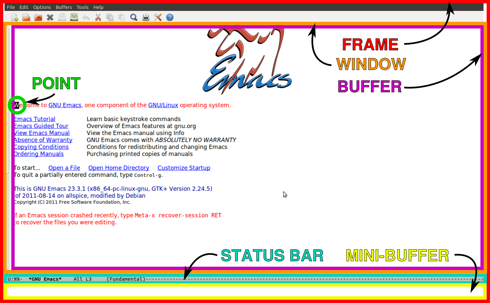

Introduction to Emacs¶
Written by PChan on 2016-12-08
What is Emacs¶
Emacs is a multi-purpose extensible text editor built upon Elisp (think Scheme). If you are interested in trying out Emacs, check out the Installing Emacs guide.
Using Emacs¶
Let us go over the key notations in Emacs
C- (press and hold) the Control/Ctrl key
M- (press and hold) the Meta/Alt key
S- (press and hold) the Shift key
DEL backspace key, sometimes written as <backspace>
RET Return or Enter key
SPC Space bar/Space key
ESC Escape key
TAB Tab key
C-x C-f means while holding down the Ctrl key, press the x key and then press the f key
M-x means while holding down the Alt key or the Meta key, press the x key
Some common Emacs commands:
Key Commands What it does
C-x C-c save-buffers-kill-terminal Exit Emacs
C-x C-s save-buffer Save file
C-x C-f find-file Open file or create it if it does not exists
C-h C-h help-for-help Open up the help window
C-g keyboard-quit Quit a partially entered command
Note
To execute commands in the second column, you would do M-x <command>
Emacs Keybinding¶
There are quite a few and easy rules to remember regarding Emacs binding
C-xis the default global prefixC-cprefix is typically used for user-defined commandsC-<number>passes a number to a command, usually used to specify how many times to repeat a command
Think of prefix as a key sequence that tells Emacs to interpret the next set of keystrokes differently.
For example, the global Emacs prefix, C-x, comes before the default Emacs commands. To open a file,
you would do C-x and then C-f (f is for file).
Text Editing¶
It is nice to know how to move around, but what about copying, cutting, pasting, or undoing? In Emacs, cutting is known as killing and pasting is known as yanking.
Here are some basic Emacs editing key bindings (some also work in the terminal):
Key Commands What it does
DEL delete-backward-char Delete the highlighted region or character before the point
C-d delete-char Delete the character at point (Same as the delete key)
M-\ delete-horizontal-space Delete all spaces and tabs around point
M-SPC just-one-space Delete all spaces and tabs around point except for one space
M-d kill-word Kill to the end of a word starting at point
M-DEL backward-kill-word Kill to the beginning of a word starting at point
C-S-DEL kill-whole-line Kill the entire line (only non-terminal Emacs)
C-k kill-line Kill to the end of the line
M-k kill-sentence Kill to the end of sentence
C-x DEL backward-kill-sentence Kill to the beginning of sentence
C-w kill-region Kill the highlighted region
Important
Delete and kill means two different things. When you delete something, it is gone forever!! When you kill something, it is saved to the kill ring which can be thought of as the clipboard.
Great, but how would you paste something?
Key Commands What it does
C-y yank Yank the most recent kill into the buffer
M-y yank-pop Replace the yanked text with an earlier kill
C-y is your normal paste operation. However, Emacs keeps a history of all your previous kills and
you can retrieve those via M-y. If you were to cut or copy something from another application more
recently than your last kill, C-y would yank from the clipboard.
Warning
M-y can only be used after a previous M-y or a C-y. After doing M-y, successive
C-y will yank the same thing instead of your most recent kill. After reaching the beginning
of the kill ring, executing M-y would wrap back to the most recent kill.
Emacs uses the following command to copy:
Key Commands What it does
M-w kill-ring-save Copy the highlighted region
We keep saying highlighted region, but how would you highlight a region without using the mouse? The answer is:
Key Commands What it does
C-SPC set-mark-command Toggle the activation of the mark
When you press C-SPC the first time, Emacs set the mark at point. When you move the point around,
the region between the point and the location of the mark is highlighted. To get rid of the mark, press
it twice: C-SPC C-SPC.
Exercise: Now create a text file in Emacs and type something in it. Practice highlighting different regions and using Emacs shortcuts to delete, kill, and yank text around.
Now you may be wondering, how would undo your most recent change. The following command would solve your issue:
Key Commands What it does
C-/ undo Undo your most recent change (or redo them)
C-x u undo Undo your most recent change (or redo them)
When you press C-/ or C-x u, you undo your most recent change. Any command other than the
undo command would break the undo sequence and push the entire sequence of undo commands as a single
set of changes. For example, to reverse an undo, you might press C-f and then press C-/ or
C-x u.
Searching and Replacing¶
One of the most important operation when editing text is find and replace. In Emacs, searching is done via:
Key Commands What it does
C-s isearch-forward Perform an incremental search from point onward
C-r isearch-backward Perform an incremental search backward from point
When you press C-s, you would notice that Emacs start searching the moment you enter a single
character. It also highlights all instances of the query. Pressing C-s again would move the point to
the next instance of the query. Pressing C-r would move the point to the previous instance of the
query. Cancel the search by pressing C-g.
Exercise: Open up a large text file or create a new file and dump a large amount of text in it.
Practice using C-s and C-r to search through the file.
Replacing in Emacs is done via:
Key Commands What it does
M-% (Meta-Shift-5) query-replace Replace a string with a different string
Each instance of the query would prompt you for one of the following characters:
SPC replace the current occurrence with the new string
y
DEL skip the current occurrence
delete
n
C-g exit without doing any more replacement
RET
q
. replace the current occurrence and then exit
! replace all remaining occurrences without prompting
^ go back to the previous occurrence
If you press M-% after doing C-s or C-r, it would look for the current search string and
prompt you for the replacement (Find and replace).
Exercise: Open up a large text file and practice these new commands.
Frames and Windows¶
In Emacs, GUI windows are refer to as frames. Each Emacs window contains a buffer. When editing files, it may be helpful to look at multiple files at the same time. To do this, we use the following commands:
Key Commands What it does
C-x 2 split-window-below Split the current window in half vertically
C-x 3 split-window-right Split the current window in half horizontally
After splitting the window, you will notice that both windows contain the same content. This is hardly useful. To change that, we will need to know the following command:
Key Commands What it does
C-x o other-window Move the cursor to the other window
To get the same layout as the picture above, execute the following commands in a new instance of Emacs:
Key Commands
C-x 2 split-window-below
C-x o other-window
C-x 3 split-window-right
Exercise: Use what you learn just now to move the point/cursor to the top window.
Buffers¶
When you open a file in Emacs, the file is contained in a separate buffer, which is a temporary copy of
your file that you may modify as you please. To keep the changes, you would call the save-buffer
command, which is bound to C-x C-s. If you wish to save it under a different name (think “Save as”
in other editors), you would call the write-buffer command, which is bound to C-x C-w.
To kill a buffer, use C-x k or call the kill-buffer command. Then, press RET to kill
the current buffer. You may also type the name of the buffer you wish to kill followed by RET.
Buffer names are typically the same as the file name.
Important
Files and buffers are two distinct concepts. Buffers refer to the temporary content of a file, while files refer to the physical file on your disk. Killing a buffer does not delete the actual physical file.
To switch to a different buffer, use the switch-to-buffer command which is bound to C-x b.
Here is an exercise for you:
- Open/Create the file hi.txt
- Modify hi.txt
- Open/Create the file bye.txt
- Switch back to the buffer named hi.txt
Notice that any modifications you made to the original buffer (ie hi.txt) is still there. This is because the content of a buffer is stored in memory after the initial read which is faster than reading the file from disk every single time.
Now What...¶
Use what you learn about buffers and windows to boost your productivity. Learn the shortcuts to maximize your productivity! :)
Here are some additional resources to expand your Emacs knowledge:
- Start with the Emacs Wiki. You might need to scroll down a bit for the meaningful information.
- To keep track of the various Emacs commands, check out the Emacs Survival Reference Card.